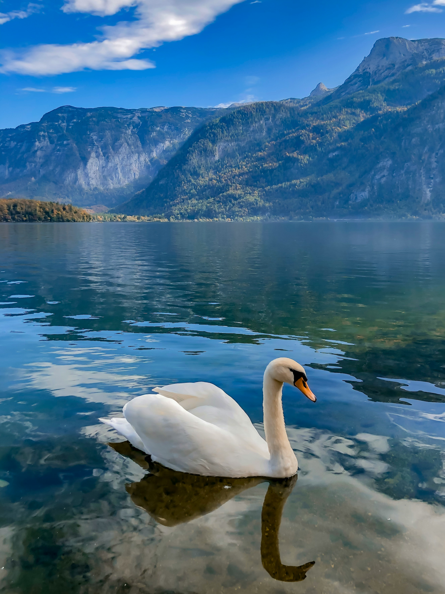
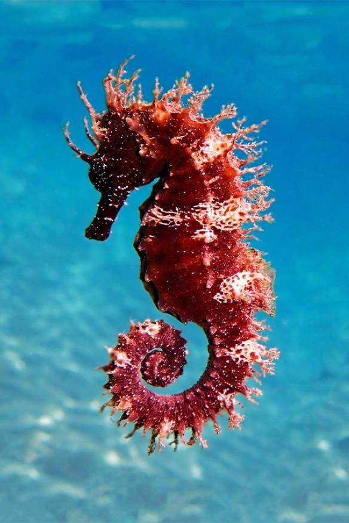
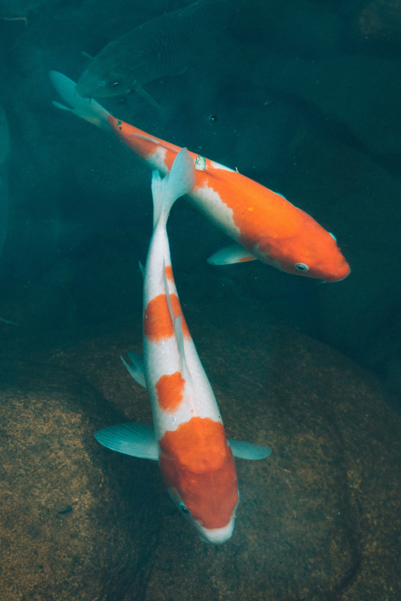
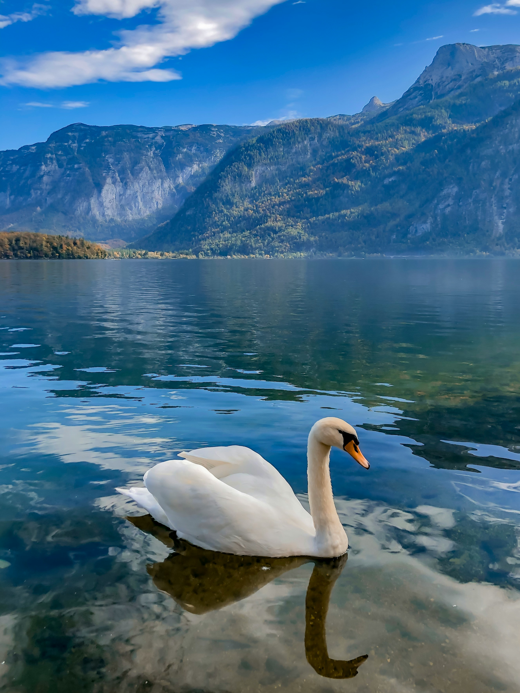
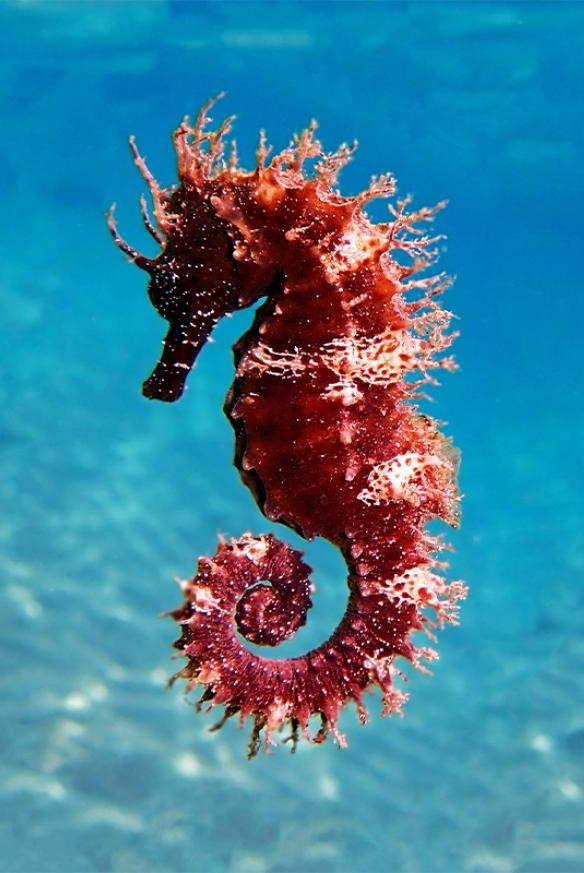
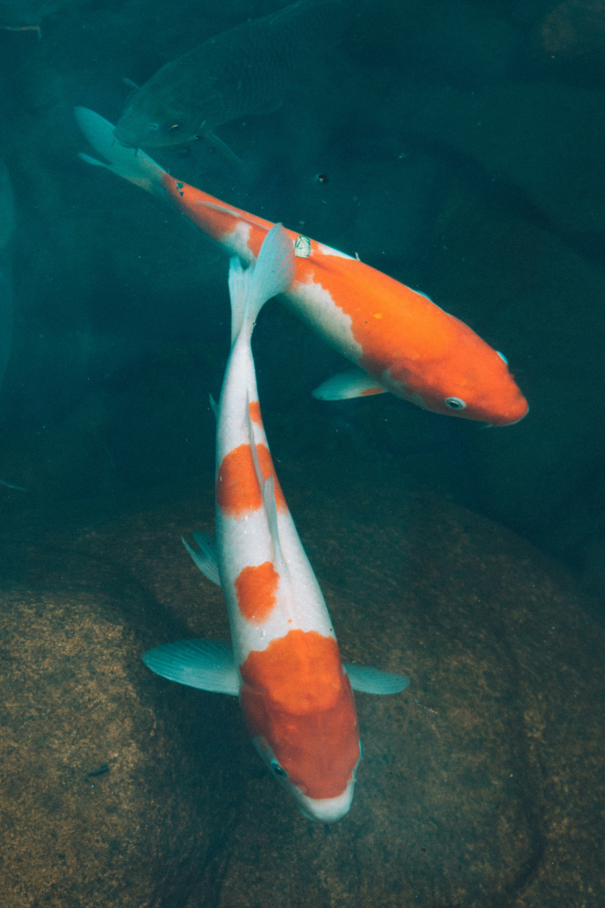
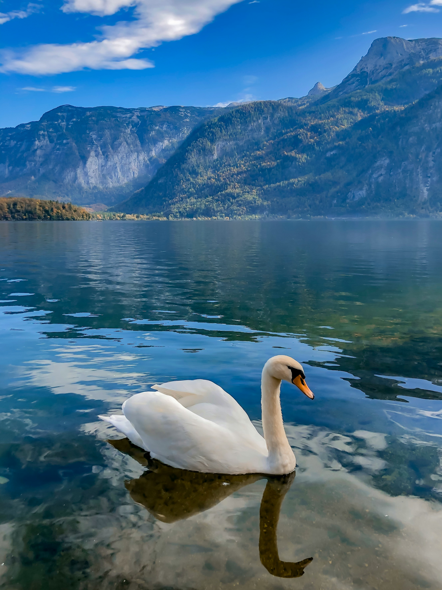
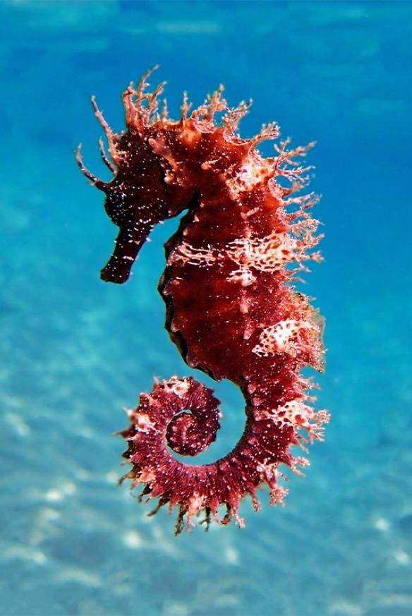
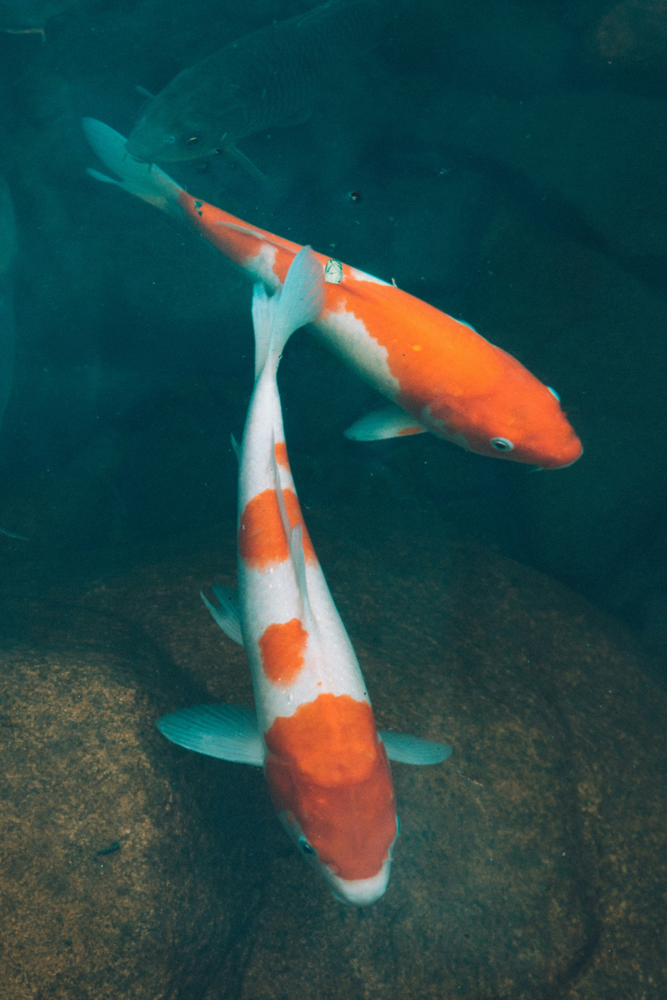

Discover the Story Behind BlueDepths
Our journey began with a passion for the ocean and a commitment to its preservation. Join us as we explore the depths, uncovering the secrets of underwater life and advocating for sustainable practices.
"Our mission is to inspire a deep connection with the ocean, fostering a sense of wonder and responsibility. Through exploration and education, we strive to protect our blue planet for future generations."



About BlueDepths
◈ Our Mission
At BlueDepths, our mission is to explore, understand, and protect the intricate and diverse world beneath the waves. We are dedicated to advancing marine conservation efforts,
raising awareness about ocean health, and fostering a deeper connection between people and the underwater world. Our goal is to inspire positive change and encourage sustainable practices to ensure a thriving marine ecosystem for future generations.
◈ Who We Are
BlueDepths is a team of passionate marine biologists, conservationists, and enthusiasts committed to the study and preservation of marine life.
Our diverse team brings together expertise from various fields, including marine biology, environmental science, and oceanography. We work collaboratively on research projects, educational programs, and community outreach initiatives to promote ocean conservation and sustainable development.
◈ What We Do
➡ Marine Research
We conduct cutting-edge research on marine ecosystems, focusing on the health and behavior of marine species, the impact of human activities, and the effectiveness of conservation strategies. Our research aims to contribute valuable knowledge that can help guide effective marine management and conservation efforts.
➡ Conservation Projects
Our conservation projects target critical issues such as coral reef degradation, overfishing, and pollution. We work with local communities, governments, and other organizations to implement practical solutions, restore damaged habitats, and protect endangered species.
➡ Educational Programs
Education is at the heart of our mission. We offer educational programs and resources for all ages, including school workshops, public seminars, and online courses. These programs are designed to increase awareness about marine life, foster a sense of stewardship, and encourage environmentally responsible behaviors.
➡ Community Outreach
Engaging with communities is essential for driving change. We organize events,
volunteer opportunities, and awareness campaigns to connect people with the ocean and motivate them to participate in conservation efforts. Our outreach activities aim to build a network of informed and passionate ocean advocates.
◈ Get Involved
There are many ways to support our mission and make a difference. Whether you’re a student, a professional, or simply a marine enthusiast, we welcome your involvement. You can volunteer with us, participate in our events, or make a donation to support our research and conservation projects.